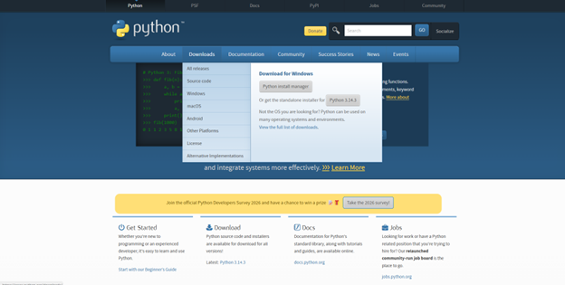

Для работы с дроном понадобится язык программирования и библиотеки для него, а также среда разработки. Помимо этого нужны программы для настройки самого дрона
Для программирования дрона на языке Python понадобится Pioneer station для установки прошивки автопилота.Гайд на установку и ссылка на скачивание находится в вкладке настройка дрона

Для установки питона перейдите на официальный сайт и наведитесь на Downloads. В появившемся окне выберите установщик новейшей версии Python в правой части открывшегося окна
В установщике перейдите в дополнительные опции и включите опции "Добавить в PATH" и "установить pip"
При установке Python вам сразу же доступна среда разработки IDLE, её будет вполне достаточно.
Если же вы хотите более удобную среду с возможностью создания больших проектов, советую установить Visual studio code или Pycharm.
Для работы с дронами pioneer с помощью языка python, нужно установить библиотеку pioneer-sdk. Для её установки нужно открыть командную строку - нажать сочетание клавиш Win+R и ввести cmd. После этого появится окно командной строки, куда нужно вписать 'pip install pioneer-sdk'